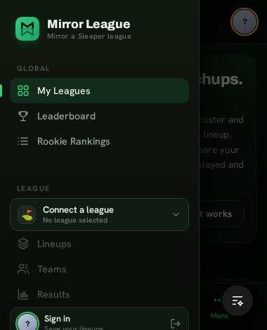
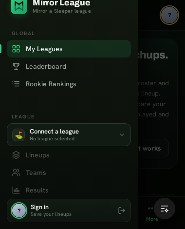

On mobile, the side nav is an off-canvas drawer whose Sign in chip is pinned to the
bottom with margin-top:auto. Because the drawer is sized with 100vh and
doesn’t scroll, its bottom edge sits underneath the browser’s bottom toolbar — so the
one button a logged-out visitor needs is clipped and, on short screens, unreachable.
Real Playwright captures of the running app — logged out, drawer open, at a short 380×470 viewport where the nav list (499px) exceeds the screen. Both show the state after a wheel-scroll gesture.
overflow hidden

100dvh + scroll + safe-area

All three live in the one @media (max-width:760px) .side block.
The drawer uses height:100vh. On mobile, vh
is the largest viewport (toolbar collapsed), so the bottom overshoots the visible area
when the toolbar is shown. The .app wrapper already switched to 100dvh — the drawer didn’t.
The drawer is a flex column with no overflow-y. When Global + League
nav + switcher + chip exceed the screen, the bottom content is clipped with no way to reach it.
Bottom padding is a flat 14px. On notched phones the home indicator
eats it, nudging the chip further out of reach. Needs env(safe-area-inset-bottom).
web/src/shell.css — the mobile .side block. No JS, no markup change.
dvh audit — it already handles safe-area, but confirm it lines up with the shorter drawer.
Captures: real Playwright/Chromium screenshots of the running app at localhost:5173,
logged out, drawer open, 380×470 viewport. They verify the overflow-scroll half of the fix — the part that was broken —
by measuring the Sign-in chip’s position after a real wheel gesture (old: bottom 485px, unreachable; fixed: 456px, in-frame).
Caveat: headless Chromium has no dynamic browser toolbar and no notch, so vh/dvh
resolve identically here — the 100dvh and safe-area-inset
parts remain reasoned from the CSS and are best confirmed on a real phone with the URL bar showing.